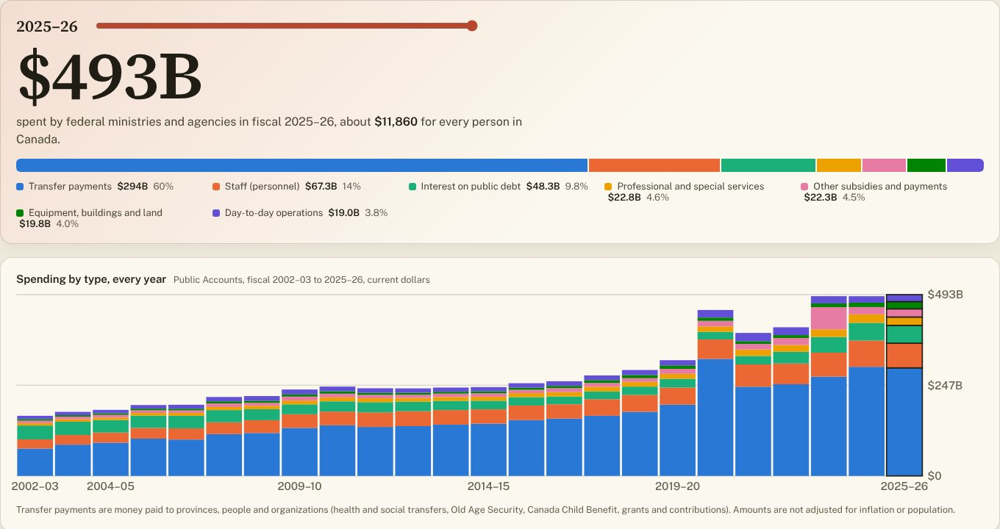

Follow the dollar · Public Accounts
Where Ottawa’s money goes

Explore 24 years of federal spending →Federal ministries and agencies spent $493.5 billion in fiscal 2025–26, about $11,860 for every person in Canada.
By type of spending
| Standard object | 2025–26 |
|---|---|
| Transfer payments | $294.1 billion |
| Personnel | $67.3 billion |
| Public debt charges | $48.3 billion |
| Professional and special services | $22.8 billion |
| Other subsidies and payments | $22.3 billion |
| Acquisition of machinery and equipment | $16.0 billion |
Largest departments
| Ministry or agency | 2025–26 |
|---|---|
| Department of Finance | $147.7 billion |
| Department of Employment and Social Development | $107.0 billion |
| Department of National Defence | $48.2 billion |
| Department of Indigenous Services | $25.5 billion |
| Department of Health | $11.7 billion |
| Department of Public Works and Government Services | $10.4 billion |
| Canada Revenue Agency | $10.4 billion |
| Department of Foreign Affairs, Trade and Development | $9.4 billion |
| Department of Crown-Indigenous Relations and Northern Affairs | $9.2 billion |
| Royal Canadian Mounted Police | $8.9 billion |
| Department of Housing, Infrastructure and Communities | $8.8 billion |
| Department of Veterans Affairs | $7.9 billion |
Gross expenditures by standard object as published in the Public Accounts of Canada; not adjusted for inflation. Per person uses Statistics Canada’s population on July 1 inside the fiscal year. Source: Receiver General for Canada (PSPC).
Explore 24 years of federal spending →